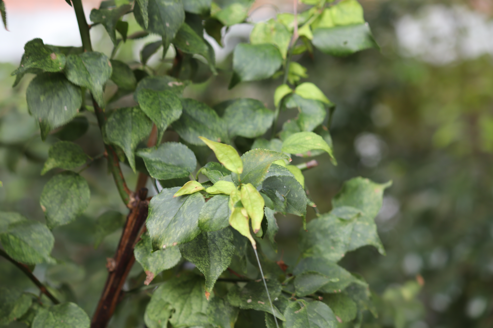

현화식물 현삼목 물푸레나무과
라일락(
Syringa vulgaris
)
“유럽 원산으로 전국에 심어 기르는 낙엽나무”
높이 약 6m
에 달하는 나무로 4-5월에 묵은 가지에서 난 길이 15-20cm의 원추꽃차례에 피며, 지름 8-12mm, 보라색 또는 연한 보라색을 띤다.
잎은 마주나며, 난형 또는 난상 타원형, 길이 6-12cm, 폭 5-8cm, 가장자리가 밋밋하다.